Aventura
Snorkeling
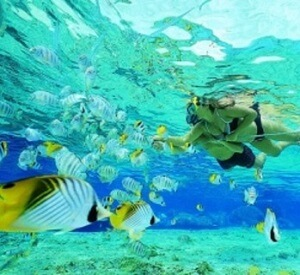La mayoría de las playas de Ixtapa ofrece la posibilidad de realizar Snorkel y desulmbrarse con la gran variedad de vida marina que podemos encontrar, como caballitos de mar, corales, peces de todos los colores, y hasta tortugas marinas.
Parachute
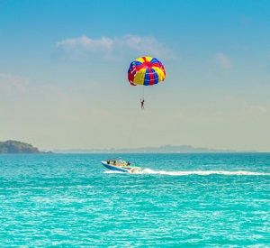Hacer parachute es una actividad sumamente emocionante y experiencia única donde, no solo descubris lo que se siente volar, sino que también se pueden ver los mejores paisajes de las bahías de Ixtapa.
Ciclopista
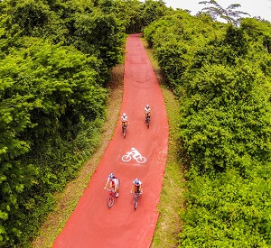La ciclopista de Ixtapa ofrece un recorrido único de 8 kilómetros, donde se puede avistar gran variedad de flora y fauna, y disfrutar de su abundante naturaleza. Es una opción perfecta para conocer la ciudad.
Nadar con delfines
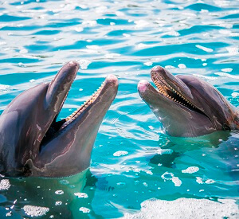En Delfiniti podrás realizar esta mágica experiencia de nadar con delfines. Existen diversos programas interactivos de nado diseñados para adaptarse a cada necesid e inquietud de los visitantes.
Parque Aventura
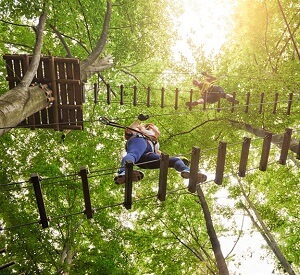El Parque Aventura de Ixtapa cuenta con 28 hectáreas de vegetación selvática. Aquí podrás realizar emocionantes actividades como tirolesa y pasar por los puentes colgantes.
Cabalgata
Pasear a caballo en Ixtapa es una experiencia hermosa, ya que se recorren impresionantes caminos de la selva tropical y se regresa por la playa en pleno atardecer, cuando el sol se esconde por el mar.
Naturaleza
Paseo en Catamarán
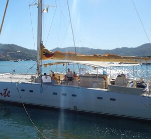Es un paseo de aproximadamente 2 horas y media donde se navega por las aguasde las bahías de Ixtapa y Zihuatanejo mientras se puede admirar el mágico atardecer. Si tenés suerte, se pueden llegar a avistar ballenas y delfines.
Park Bio La Escollera
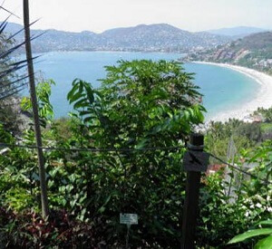Este parque ofrece un impresionante recorrido en el que se pueden conocer más de cincuenta especies de animales como insectos y reptiles, y más de 120 especies de plantas y árboles frutales.
Paseo del Pescador
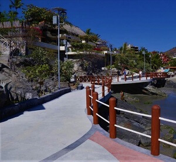Estre agradable paseo comienza en el muelle de la Playa Principal, hasta Playa Madera. Allí podemos encontrar tiendas de artesanías con productos regionales y diversos restaurantes para todos los gustos.
Cultural
City Tour
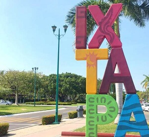El City Tour por la ciudad de Ixtapa ofrece un recorrido para conocer lo más importante de este maravilloso lugar y su reciente historia.
Museo Xihuacán
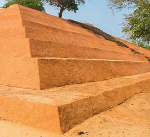el Museo Xihuacán consiste en una zona arqueológica y significa "Lugar de los que poseeen el tiempo". En el museo podremos encontrar históricas piezas de la región y conocer increíbles historias.
Museo Arquelógico de la Costa Grande
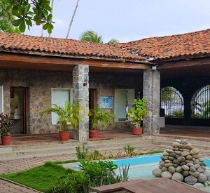Este museo cuenta con seis salas donde se exhiben piezas obtenidas de distintas zonas arqueológicas del área y muestran la evolución y vida de los pueblos asentados en Guerrero.